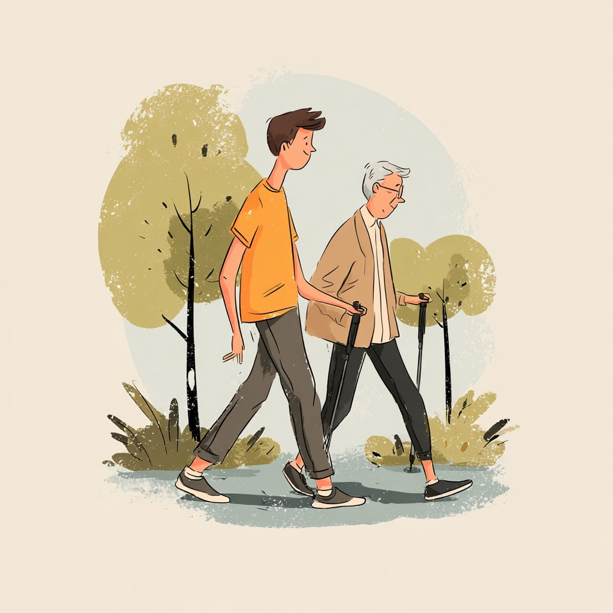

Personnes âgées
Pour préserver l'autonomie, entretenir la mobilité, travailler l'équilibre et garder de la confiance dans les gestes du quotidien.
Forcalquier · Depuis Saint-Maime · À domicile & en extérieur · Séance d'essai offerte
À Forcalquier, je vous accompagne avec une approche sérieuse, chaleureuse et réellement adaptée, pour entretenir votre forme, améliorer votre équilibre, reprendre une activité en douceur ou retrouver plus d'aisance au quotidien.
J'interviens auprès des personnes âgées, des jeunes retraités mais aussi auprès de toute personne qui souhaite reprendre confiance avec un suivi humain, progressif et personnalisé à Forcalquier et dans les environs.
Pour qui ?
Pour préserver l'autonomie, entretenir la mobilité, travailler l'équilibre et garder de la confiance dans les gestes du quotidien.
Pour rester en forme, reprendre une activité avec sérieux, prévenir la perte de capacité physique et continuer à bouger avec plaisir.
Reprise progressive, perte de poids encadrée, marche, cardio adapté, renforcement léger, coordination ou réadaptation à l'effort.
À Forcalquier et autour, au bon rythme
À domicile ou dehors quand le contexte s'y prête, le travail se fait dans une ambiance simple, calme et accessible. L'idée n'est pas d'en faire trop, mais d'avancer avec régularité.
Depuis Saint-Maime, j'interviens aussi à Forcalquier pour proposer un suivi sérieux, humain et progressif, avec des objectifs utiles dans la vraie vie.
Accompagnements
Un cadre rassurant, pratique et confidentiel pour travailler dans un environnement familier, avec un accompagnement entièrement sur mesure.
Marche, respiration, mobilité, reprise de confiance et promenade sportive dans un cadre agréable, sans logique de performance.
Pour accompagner un proche, un couple ou un petit groupe en EHPAD, dans un cadre rassurant, souple et adapté au quotidien.
L'objectif n'est pas seulement de faire une séance : il s'agit de constater une évolution utile, durable et adaptée à votre situation.
C'est quoi l'APA ?
L'activité physique adaptée tient compte de votre âge, de votre condition physique, de vos fragilités éventuelles et de vos objectifs. Le but n'est pas la performance.
Le but est de bouger mieux, de gagner en confiance, de préserver votre autonomie et de vous aider à rester actif le plus longtemps possible.

Comment cela se passe ?
Vous me contactez par téléphone, message ou formulaire pour me présenter votre besoin à Forcalquier ou dans les environs.
Nous faisons connaissance, j'observe votre situation et nous voyons ensemble ce qui vous convient.
Je vous propose un cadre adapté à votre niveau, vos objectifs et votre rythme de vie.
Nous faisons évoluer les séances pour obtenir des progrès concrets et durables.
Questions fréquentes
Non. Justement, l'accompagnement est pensé pour s'adapter à votre niveau de départ et à vos capacités du moment.
La priorité est donnée aux personnes âgées, aux jeunes retraités et aux personnes ayant besoin d'un accompagnement santé personnalisé, mais d'autres profils peuvent être étudiés selon le besoin.
Oui. J'interviens à domicile ainsi qu'en extérieur autour de Saint-Maime, y compris à Forcalquier selon le lieu de séance.
Je vous explique simplement les possibilités après un premier échange et la séance d'essai offerte, pour choisir un rythme adapté à votre besoin.
Qui suis-je ?
Je m'appelle Nicolas. Je suis titulaire d'une Licence d'enseignant en activité physique adaptée et santé et j'accompagne depuis près de 10 ans des personnes qui souhaitent bouger de façon contrôlée, progressive et sécurisante.
Mon approche est simple : écouter, adapter chaque séance à la personne et chercher des progrès utiles dans le quotidien, sans pression inutile.
Portrait de Nicolas
Contact
Vous souhaitez reprendre une activité, travailler votre équilibre, retrouver de l'aisance dans vos déplacements ou mettre en place un suivi sérieux pour vous ou un proche ?
Je vous propose une séance d'essai offerte pour faire connaissance et voir ensemble la forme d'accompagnement la plus adaptée si vous habitez Forcalquier ou une commune proche.